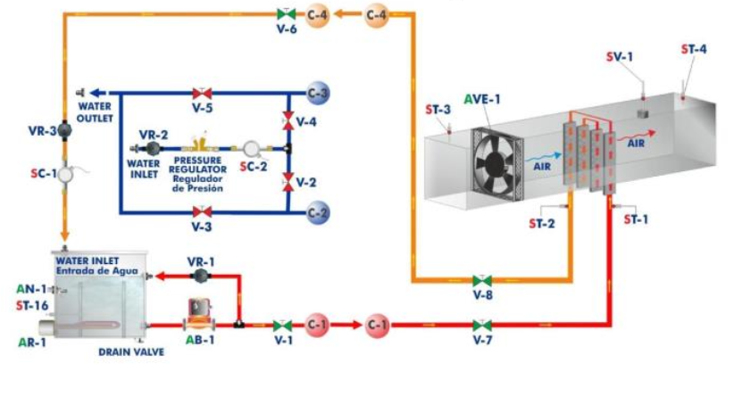
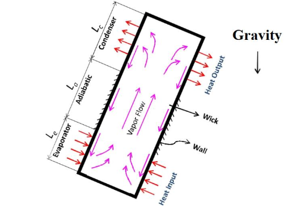
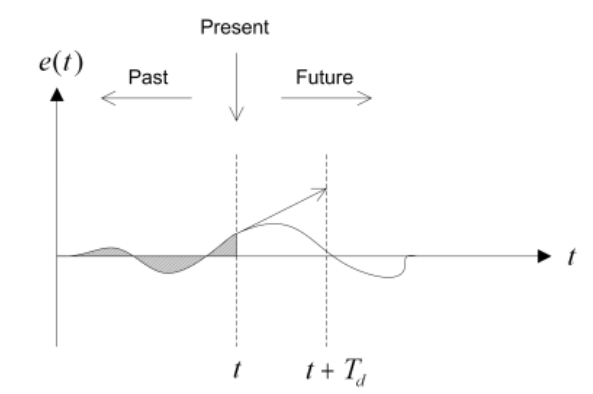
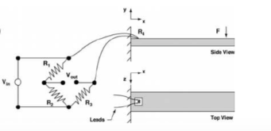

Laboratory
Hands-on experiments in thermal systems, controls, and instrumentation. Tools used include LabVIEW, MATLAB/Simulink, and ANSYS.
Heat Pipe Experiment
Characterized passive thermal transport with thermocouples and LabVIEW DAQ; benchmarked against solid conduction and quantified uncertainty.
Project Details
Evaporator/Condenser instrumentation and steady-state logging in LabVIEW; calibration and RSS uncertainty; comparison against copper rod to illustrate effective conductivity gains.
Heat Exchanger Performance
Evaluated effectiveness–NTU and UA; compared measured trends with ANSYS Fluent predictions for sizing and performance.
Project Details
Computed ε–NTU/UA and capacity ratio; validated correlations and CFD; discussed pressure-drop trade-offs and design implications for target outlet temperatures.
PID Control of DC Motors
Tuned P/PI/PID in MATLAB/Simulink to balance rise time, overshoot, and steady-state error; linked simulation to benchtop response.
Project Details
Time-constant estimation and first-order approximation near the operating point; transient metrics vs design targets; robustness considerations for automated manufacturing systems.
Strain Gauge Beam Deflection
Measured strain on a cantilever using bonded gauges and LabVIEW DAQ; validated Young’s modulus against ANSYS structural analysis.
Project Details
Gauge calibration, repeated trials, and drift checks; curvature–moment regression; FEA cross-check of deflection/stress to support modulus estimate.